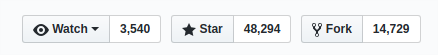
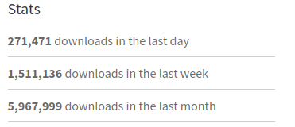
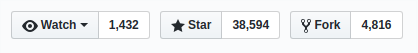
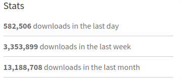

Unstoppable growth of front-end frameworks
A simple summary of the web front-end evolution, which will try to describe how and why tools improve & why there is still something to explore.
JavaScript.addEventListener('birthday-parties', presentation.log)
- Date of Birth: May 1995
- Standardization: June 1997
-
jQuery's Date of Birth: January 2006jQuery's 3.0.0 Birthday Party: Jun 9, 2016 
-
webpack's Date of Birth: Feb 19, 2014webpack's 4.0.0 birthday party: Feb 25, 2017 